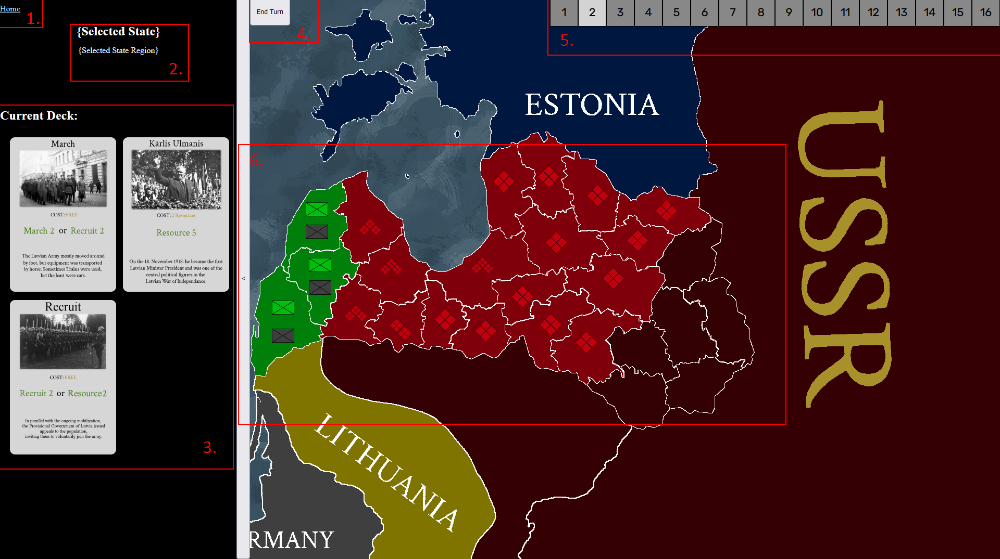
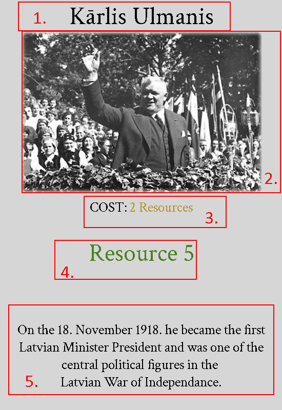

Over The CEE is a card and "grand"-strategy game combined into one, based on real events in the Latvian War of Indpendance.
The Game is meant to be played on a 16:9 monitor in your browser on full screen!
Overview:
The card game part is turn based between you and the opponent, the Soviet Union.
You play cards, end your turn, and then the Soviets do something, and repeat until the win or lose conditions have been met.
Game Screen:
Image of the Game Screen for Scenario #1 as of v.0.002-pre.3

On the right is an image of the game screen for the game, here is what each point means:
The Home button, it send you back to the previous page due to many people wanting a back button.
This is a state selector, when you click on a state (the regions that are bordered by white) it will tell you its name and region it belongs too, the text will be green or red depending on if its latvian(green) or soviet(red) just like the colour of the state itself.
Your Deck, it will hold all of your cards, which I which will be written about later.
After you have played your cards, or have no moves left available, you can click on the end turn button to well end your turn and let the soviets do their turn, after the soviets finish their turn, your cards will replenish or you will draw new cards.
Your Resource counter! Your current displayed resoures will be showed with a brighter background, in the example you have 2 resources. Resources cap at 16 and if you have 0 the resource counter will be red.
The Map of Latvia. In this example is almost completely overrun by soviets, only three states are owned by Latvia(green) and the rest of them are in Soviet(red) territory. Some states are even darker red, which mean they are impassable for both friendly and enemy units. The other countries do not participate in your war, unless said so in mission briefing.
Cards:
Image of the card: Kārlis Ulmanis

On the right is an image of a card that is somewhat popular. Below is what each point means:
The Name of the card, or the general action of the card.
An image of the person, object of the card or just an image somehow related towards the card itself.
The cost of the card, all cards cost resources, some more, some less.
The action of the card. The text in bold green text is the action it performs, some cards will have italic green text, which is a secondary ability that is not generally used by everything. For example here we have Resource 5, which is the resource action at level 5. This action adds 5 resources to your current resource counter.
Some subtext relating to the card. It sometimes provides some trivia or fact, other times it describes the card itself.